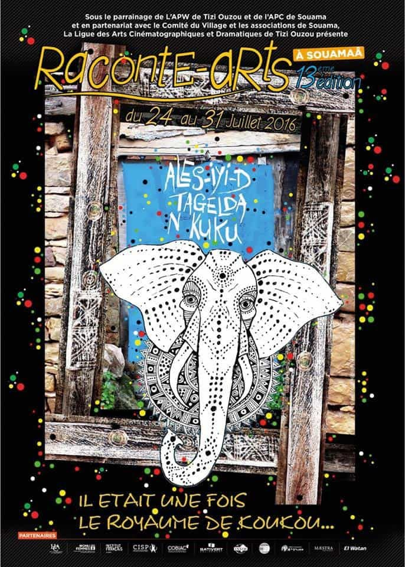

Connaissez vous ce viel adage, que l'on ressasse dans nos villages : "L'éléphant seul s'ennuie, Il a besoin de compagnie."
Son origine nous viens des temps lointains. Dans nos contrées régnait un roi qui possédait ce pachyderme et le laissait errer d'instinct. Il saccagait les cultures au grand dam des paysans.
Voici l'histoire de : L'éléphant du roi de Koukou
Au cœur des monts de Kabylie,
Règne un roi, puissant, hardi.
Son éléphant, géant terrible,
Foulait les champs, brisant l’argile.
Le roi l’aimait comme un trésor,
Plus qu’un bijou, plus qu’un or.
Car dans ses yeux brillait la sagesse,
Un monde ancien, plein de promesses.
Les paysans, dans la douleur,
Voient leurs récoltes se meurtrir d’heure.
Mais nul n’ose, tremblant d’effroi,
Adresser plainte au grand roi.
Un homme, rusé, dit enfin :
« Unissons nos voix, main dans la main.
Chacun d’entre nous dira un mot,
Devant le trône, en bel écho. »
Devant le palais d’or et d’ambre,
Sous l’œil du roi, fier et sombre,
Le premier parle, d’un ton droit :
« Votre majesté… votre éléphant… »
Silence lourd, pesant mystère,
Les autres baissent tous la tête, amers.
Le roi s’irrite, le ton s’élève :
« Et donc ? Que veut cet animal, sans trêve ? »
L’homme, habile, reprend d’un trait :
« Il s’ennuie, seul… s’il vous plaît,
Mais, Majesté, comprenez bien :
Il lui faudrait… un doux soutien. »
Le roi sourit, puis éclate,
Amusé par l’audace adroite.
Et les paysans déçus, rentrèrent chez eux,
Le roi n’ayant point exaucé leurs vœux.
Depuis ce jour, en terres lointaines,
On chante encore cette rengaine :
L’éléphant seul, s’ennuie,
Il a besoin d’une douce compagnie.
Djamel Metref
At Yenni le 13 février 2025

← Tous les poèmes